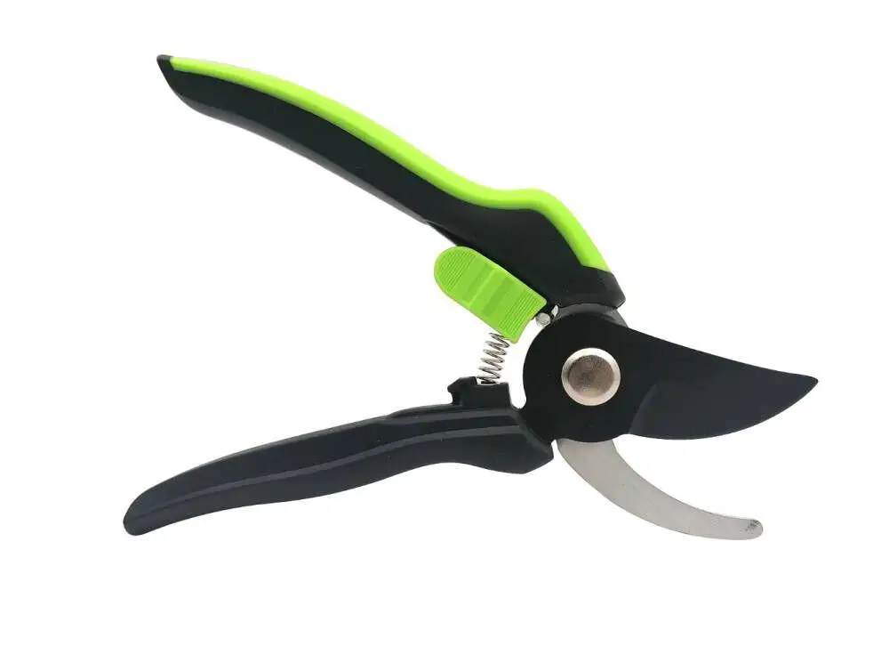

-
$19.63
Вила
Ви́ла — сільськогосподарське знаряддя з кількома довгими зубами (зазвичай від двох до шести) на держаку. Використовується для піднімання, розтрушування сіна, соломи, снопів, листя, розкидання гною, розпушування грунту тощо. Товщина і склад металу робочої частини надають вилам необхідну еластичність і стійкість до механічних пошкоджень, а покриття шаром молоткової фарби створює захисний шар від корозії. Вила мають невелику вагу. З ними легко працювати.
-
POPULAR  $4.53
Ручний секатор
Ручний секатор Bass Polska BP-8881 виготовлений з високоякісного леза, має профільовану ручку, що не ковзає. Ідеально підходить для обрізання кущів, троянд, молодих пагонів та тонких гілок.
Довжина секатора: 20,5 см. Довжина леза: 8 см. -
POPULAR $6
Cерп
Спеціальна форма полотен забезпечує просте різання. Використовують для косьби однією рукою на невеликих та важкодоступних поверхнях. Зручний та надійний серп Bellota 2550 – 00N призначений для роботи однією рукою. Спеціальна форма полотен забезпечує просте косьбу на ділянках зі складною доступністю.
Завдяки унікальній індукційній обробці інструмент відзначається міцністю та довговічністю. Протектор лез забезпечує безпечне використання серпу.
-
 $2.12
$2.12
Лійка садова 10л.
У професійному та домашньому садівництві, вирощуванні рослин незамінною є лійка великих обсягів.
Лійки з оцинкованої сталі від ПВКП "Гранд-К" - це сучасний та надійний варіант інструменту для поливу.
Принимаем заказы на изготовление леек из оцинкованной стали в нужной вам количестве.
-
POPULAR $9.41
Лопата
Додаткова характеристика: черенок - бук
Довжина: 120 см
Вага: 1,75 кг
Ширина полотна: 19 см
Держак прогумована, TPR
Форма черенка круглий
Матеріал накінечника сталь 65Mn
-
 $6
$6
Граблі віялові
Ширина: 43 см
Матеріал: Метал
Кількість зубів: 16 зубів
Вага: 1250 г
Довжина: 132 см